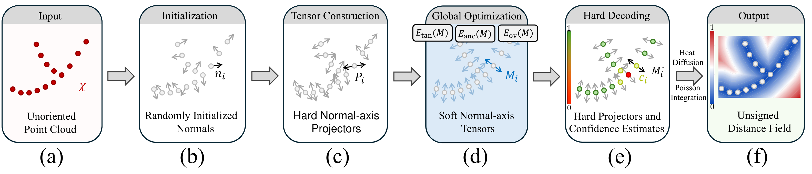

Anonymous Supplementary Material
Interactive comparisons of reconstructed surfaces. Select a shape and methods, then inspect the results from a shared viewpoint.
Noise + outliers
Non-manifold
Inspection controls clipping · points · alignment
Drag to orbit · Scroll to zoom · Right-drag to pan
Loading models…
Abstract
This supplementary material examines surface reconstruction from point samples without consistent normal orientation. A local tensor representation estimates normal axes and their confidence before a separate integration stage constructs an unsigned distance approximation. The examples above compare precomputed outputs on noisy inputs and non-manifold geometry. Shared camera controls help inspect local structure, while the reported distance metrics provide a complementary quantitative view. No reconstruction or metric evaluation is performed in the browser.
Method Overview

Figure 2: Two-stage reconstruction on a 2D Y-shaped point cloud. Given unoriented samples (a), Stage I initializes random normal axes (b), encodes them as rank-one projectors (c), and optimizes their soft relaxation using tangent-plane fitting, soft-PCA anchoring, and overlap regularization (d). Principal eigenvectors yield the decoded normal axes, while eigengaps provide confidence values (e). Bidirectional arrows represent unoriented axes; colors in (e) indicate confidence, which is lower near the junction, where multiple branch directions compete, and higher along the regular branches. Stage II applies confidence-guided heat diffusion followed by Poisson integration to construct the UDF approximation (f).
Quantitative Results
Reported directed Chamfer and Hausdorff distances on 60 shapes, averaged per shape, under five input conditions.
| Method | CD ↓ | HD ↓ |
|---|
Arithmetic means of per-shape distances, directed from the reference geometry to the reconstruction, in units of 10⁻³. Reference: ground-truth mesh where available, otherwise the original clean point cloud. Bold marks the lowest value per metric. These precomputed values are not calculated by the viewer above.